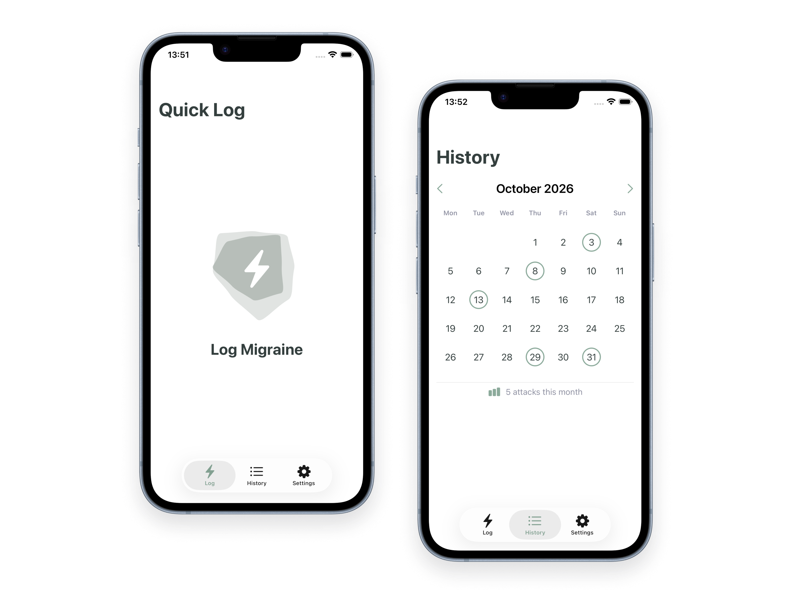
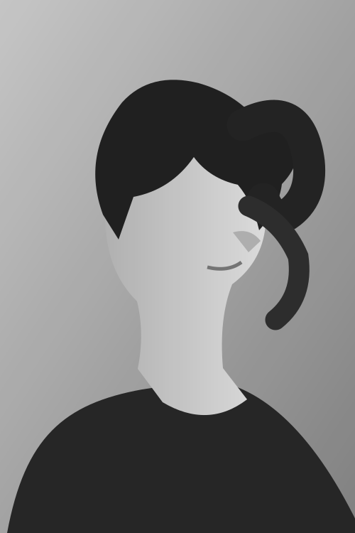

Less noise.
More intent.
Selected work.
TAP.
DONE.

iOS · SWIFTUI · AI-ASSISTEDMigraine Tracker
Designing migraine tracking for moments when tracking is hardest.
SWAP.
SCORE. KOTLIN · TERMINAL
Skyjo
A card game made of nothing but text, game logic, and a little bit of luck.
NAME.
REFRAME. ANDROID · KOTLIN · OPENAI API
Pattern Patrol
Exploring cognitive distortions through reflection and optional AI support.
About
Me.
I've always been curious about people, ideas, and what makes things work the way they do. My interests range from psychology and art to design and well-crafted products and experiences.
I enjoy understanding things in depth, questioning assumptions, and considering different approaches. Details, inconsistencies, and edge cases often catch my attention, especially when they can change the bigger picture. I value quality over quantity and want to understand not just what works, but why.
I thrive in environments where people share their knowledge, explain their reasoning, and challenge ideas constructively. Learning from others while contributing my own ideas and perspectives is what makes collaboration particularly rewarding to me.
